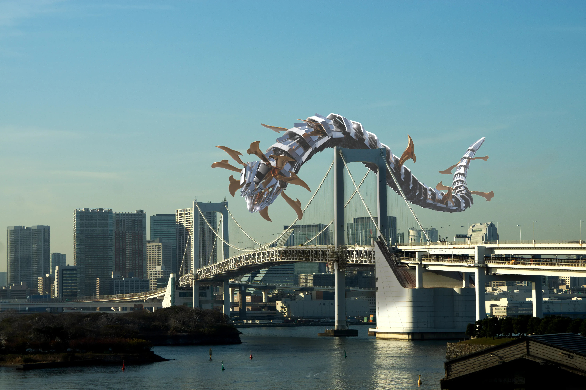
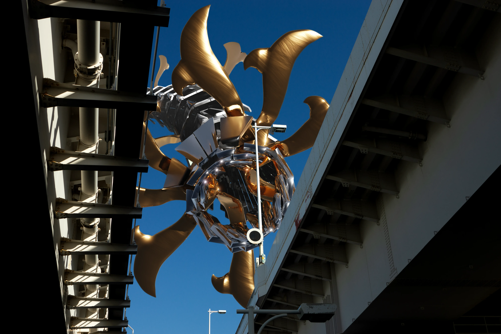
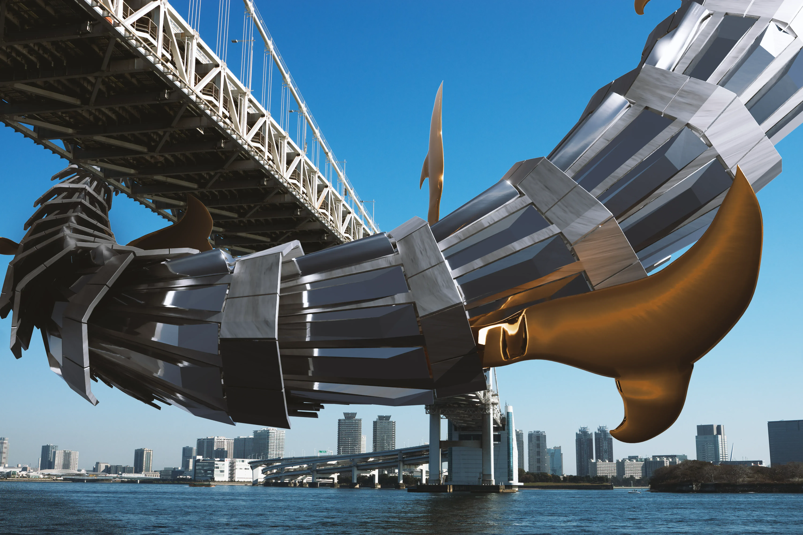

Kaiju
Kaiju explores the creative collision between Japanese and Swiss folklore through contemporary visual storytelling. In Japanese culture, a kaiju, literally “strange beast”, is a giant creature embodying both destruction and protection. The project reinterprets this figure through a cross-cultural lens. The creature merges elements of Swiss watchmaking with traditional samurai helmet ornaments (maedate ), forming a hybrid guardian of Odaiba Bay, a modern reincarnation of the cannons that once protected it.
The project was presented during Expo 2025 Osaka and Milan Design Week. Collaboration: Sébastien Matos (3D Trading Card) - Jamy Herrmann , Julien Gurtner (Trading Card Game Design).





